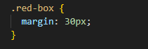
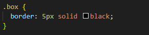
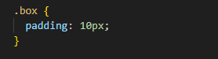

Katuta Mwila Blog Posts
What is the difference between Margin, Border, and Padding?
This post will explore the key differences between margins, borders, and padding in css
Margin
Margins are used to control the space outside of an element.
They in essence will create an invisible barrier outside of an element that no other element is allowed inside of. The size of the barrier can be specified and defines the minimum space of the nearest element in all four directions. For example a 100px margin will mean the element will be a minimum of 100px from other elements in all directions, however the size of the margin in each direction can be configured.
Margins are set using the margin property
Below are some examples of margins.
Example 1
Example 2
Example 3
As you can see the red boxes default position with 0 margin is in the top left but as we increase the margin the space between the red box and the top left of the outer container increases.
Border
Borders define the way the perimeter of an element looks
Borders can have a thickness, a color, and can be of many styles such as dashed, dotted, or a solid line.
Borders are set using the border property
Look at these examples below of what a border can look like
Example 1
5px solid border
Example 2
5px dotted border
Example 3
30px green border
Padding
Padding is used to control the space inside of an element.
The main use of padding is to create space around the content inside of an element so that it is not too close to the element's borders. Unlike with margins the padding itself is considered to be a part of the element as the space lies within the element's borders whereas margins are not considered an actual part of the element as the space is outside of the element.
Padding is set using the padding property
Below are some examples of padding.
Example 1
No Padding
Example 2
10px Padding
Example 3
50px Padding
Conclusion
In conclusion the margins control the space outside of an element, the border defines the perimeter of an element, and the padding controls the space inside of an element. The padding and the border are considered to be part of the element itself whereas the margin is space that is outside of the element.